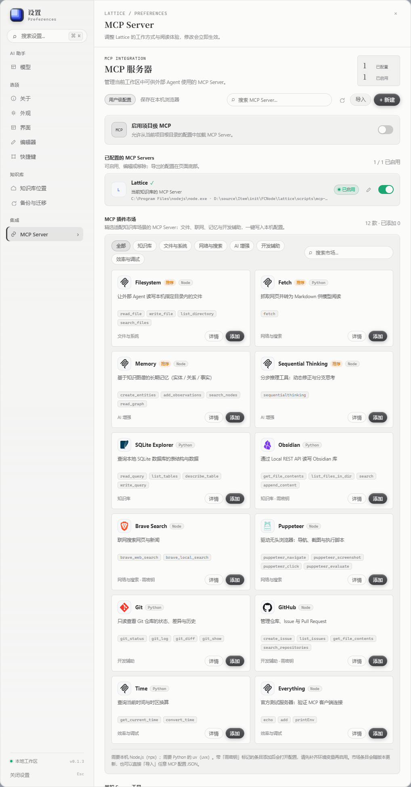
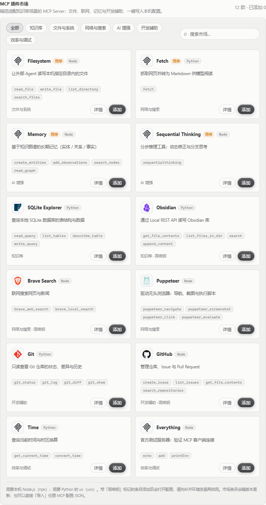

INTEGRATION / MCP
把你的知识库交给 MCP。
通过标准的 Model Context Protocol，让 Claude Desktop 等 Agent 在不搬走 Markdown 的前提下搜索、阅读和维护 Lattice。默认只读，写入能力需要你显式打开。
先理解这条连接
01 / MAPMCP Server 是一个由客户端拉起的本地 Node 进程。它和 Lattice 使用同一份 SQLite 投影与 Markdown 真源，外部 Agent 不需要再导入一份副本。
Server 只读写你配置的工作区，stdio 不需要开放网络端口。
搜索、阅读、关系和统计开箱可用；写入工具默认不会注册。
开启写入后，修改会进入 MCP 审计并保留历史版本，必要时可以恢复。
优先从应用内设置开始
02 / UI打开 Lattice 的「设置 → 集成 → MCP Server」。内置 Server 会自动带出当前应用的路径，点「复制 JSON」即可交给 MCP 客户端。
确认工具状态
读取与写入分组会把“当前可用”和“开启后可用”分开显示，先确认你要给 Agent 的权限。
复制配置片段
应用生成的 JSON 已包含 server.mjs、DB_FILE 和 VAULT_DIR，不用手抄路径。
在客户端重载
把片段粘贴到客户端配置后，重启或重载 MCP 连接；返回工具列表就说明握手成功。

5 分钟接入 Claude Desktop
03 / BOOT下面的配置使用 stdio 拉起本地 Server。将路径替换成你机器上的实际位置；如果你从设置页复制 JSON，可以直接跳过手工配置。
开发版需要 Node.js ≥ 22.5。首次使用先在仓库根目录运行 npm run setup，它会安装 MCP Server 的依赖。
DB_FILE 和 VAULT_DIR 必须与 Lattice 当前工作区一致。桌面发行版建议直接使用应用设置页生成的值。
{
"mcpServers": {
"lattice": {
"command": "node",
"args": ["D:/path/to/lattice/scripts/mcp-server/server.mjs"],
"env": {
"DB_FILE": "D:/path/to/data/lattice.db",
"VAULT_DIR": "D:/path/to/data/vault"
}
}
}
}
工具清单：先读，再决定要不要写
04 / TOOLSLattice MCP Server 总共定义 11 个工具。默认注册 8 个读取工具；另外 3 个写入工具只有在显式设置 LATTICE_MCP_ALLOW_WRITES 后才会出现。
| 分组 | 工具 | 用途 |
|---|---|---|
| READ | list_notessearch_notesread_note | 定位并读取笔记 列出最近笔记、全文搜索、按 ID / 标题 / 路径读取 Markdown 全文。 |
| READ | get_note_linkslist_tagssearch_by_tag | 沿知识关系展开 查看出链与反向链接、浏览标签、按标签筛选相关笔记。 |
| READ | get_vault_statisticslist_note_history | 理解规模与历史 获取知识库统计与最近更新，查看某篇笔记的历史版本。 |
| WRITE | create_noteupdate_noterestore_note_version | 维护 Markdown 真源 新建、替换 / 追加 / 前插、恢复历史版本。默认关闭，开启前请阅读下一节。 |
需要时再开启写入
05 / WRITE写入开关是进程级环境变量。它不是“允许某一次操作”的确认框，而是让这三个工具注册到 MCP Server；开启后仍应要求 Agent 在修改前先读取并向你确认。
"env": { "DB_FILE": "D:/path/to/data/lattice.db", "VAULT_DIR": "D:/path/to/data/vault", "LATTICE_MCP_ALLOW_WRITES": "true" }
1. 修改前先 read_note；2. 让 Agent 明确说明要改什么；3. 修改动作会写入 MCP 审计；4. 每次修改保留历史，可用 restore_note_version 回滚。
从插件市场扩展外部工具
06 / MARKET设置页的 MCP 插件市场内置 12 款精选 Server。添加动作只会把配置写入本机设置，不会替你偷偷拉起外部进程；需要密钥的条目会保持停用，补齐后再启用。
详情面板会按环境变量名称拆分输入，例如 BRAVE_API_KEY。密钥只写入本机 MCP 设置，不会出现在这份静态文档里。

安全边界
07 / GUARDRAILS把 MCP 当作一个会接触你知识库的本地进程来管理。权限越大，越应该限定在一个明确的 Vault 和一个明确的 Agent 会话里。
只给需要的目录
VAULT_DIR 指向专用知识库目录，不要为了省事把整个用户目录交给外部工具。
默认保持只读
阅读、整理和检索已经覆盖大多数工作流。只有确实需要自动维护笔记时才打开写入。
保护外部密钥
市场条目的 API Key 只放在客户端环境配置或本机设置，不要把真实密钥提交到仓库或截图。
不要暴露 stdio Server
该 Server 设计为本地 stdio 进程，不要把它改造成无认证的公网 HTTP 服务。
排障：从握手到数据逐层确认
08 / DEBUG客户端看不到 Lattice 工具
先确认配置 JSON 的路径没有被转义破坏，command 是可用的 Node，且已运行 npm run setup。修改客户端配置后需要重启或重载 MCP 连接。
工具能连接，但返回空结果
检查 DB_FILE 与 VAULT_DIR 是否指向和 Lattice 相同的数据目录。相对路径会根据启动进程的工作目录解析，优先使用绝对路径。
写入工具没有出现
仅把环境变量写成 "false" 不会开启写入。需要在 MCP Server 的 env 中设置 "LATTICE_MCP_ALLOW_WRITES": "true"，然后重启客户端。
如何确认连接真的生效
让 Agent 先调用 get_vault_statistics，再用 search_notes 查询一条确定存在的标题。这样可以同时验证握手、路径和索引。